The happiness and enthusiasm of attending a special event could be overshadowed by the stress of choosing the perfect outfit and hairstyle. If time management and decision making are not among your strongest qualities, but you still want an unforgettable experience, then you might find yourself in a difficult position. What would be the model of the dress, the color of the nails, the right hairstyle, the appropriate height of the heels, an adequate means of transportation and most of all, when will you find the time to accommodate everything and make all these arrangements and appointments?
Banquet: A single App that will centralise all the needed information and provide the opportunity of handling your appointments in a time efficient way.
Building process
1
Project Description
Deadline: 7 October 2019
This section offers an overview of our project: banquet.
2
Validation 1
Deadline: 21 October 2019
Customer Discovery process
3
Wireframe and Landing Page
Deadline: 28 October 2019
This section presents our landing page and wireframes
4
User experience
Deadline: 4 November 2019
Interviews, User Persona, User Stories, Use Flows
5
Validation 2
Deadline: 18 November 2019
Lead Generating Campaign
6
Market Research
Deadline: 2 December 2019
The profitability of our business
7
Rebranding for MVP
Deadline: 6 Janury 2020
EXTRA phase: Rebranding
8
Minimum Viable Product
Deadline: 6 Janury 2020
This section presents our MVP.
9
First Sale
Deadline: 6 January 2020
This section presents our first sale experiece.
Modified items appear with an exclamation mark similar to the one preceding this paragraph.
Milestone 1
The Problem
The happiness and enthusiasm of attending a special event could be overshadowed by the stress of choosing the perfect outfit and hairstyle. If time management and decision making are not among your strongest qualities, but you still want an unforgettable experience, then you might find yourself in a difficult position. What would be the model of the dress, the color of the nails, the right hairstyle, the appropriate height of the heels, an adequate means of transportation and most of all, when will you find the time to accommodate everything and make all these arrangements and appointments?
Our Solution
A single App that will centralise all the needed information and provide the opportunity of handling your appointments in a time efficient way. The App’s feature set includes:
1. Showcase of multiple dress models
2. Partnerships with dresses providers and possibility of purchasing the desired product through the app (+delivery)
3. Showcase of multiple hairstyles
4. Showcase of multiple shoes models
5. A list of salons for manicure and hairstyle appointments
6. A list of transportation suggestions
7. The possibility of creating a group of friends to make sure there will not be two people with the same outfit
8. The possibility of providing a time frame and a list of favorites salons and getting all your appointments done automatically
9. Facilitates renting a limousine
10. Modern fashion suggestions
11. A simulator to see how the dress and the shoes would look together in different colors
Customer Segment
Mostly young graduates that will participate to their graduation Prom, with ages roughly covered between 22-25. If the app is a success it might get extended to Highschool Proms as well.
After the platform rebranding, our customer segment will extend to any person who attends special events (proms, weddings, parties etc). This includes men and women with ages ranging from 16 to approximately 50.
Competition
Our advantages
1. Unique value on the market - little to no similar products are available on the market
2. Solves a popular problem amongst a large percentage of the population
3. Growth posibility by signing up partnerships with more salons and shops
Key Metrics
1. How many people download the application?
2. How many salons signed contracts with us?
3. How many dresses or shoes are sold through the application?
Cost Structure
There are two types of costs: fixed costs and variable costs. At the beginning of our startup, there are no variable costs. As for fixed costs we can mention the following:
1. Bank charges
2. Application maintenance
3. Promotion and advertising of the app
Revenue streams
Our startup will gain its revenues from:
1. Application downloads from google store or app store
2. Advertisements
3. Other partners such as salons, limusine rentals and dress shops
Milestone 2
Validation
Synopsis
The thought of spending too much time and money for finding something to wear (dress/smoking) has lead us to investigate a solution to benefit
those who meet this kind of problem. The proposed solution is to ask as many people as we can to check if the problem is real. If so, then
by implementing an application that will meet each requirement of each person's problem, then the proposed solution is good and we can continue
by developing our idea.
For testing the problem, each of us will take notes about how many clients are visiting a specific salon/store and how much time each client
is willing to spend.
For testing the solution, we will take a specific approach to make life easier for each of the clients. For example, we will propose to clients
the nearest salons with their prices and the estimated time for their hairstyle/manicure. We will propose also the dresses/smokings that are
available at different stores with their prices.
In the end, we will establish if our solution met all the important requirements. If not, then we will take a different approach to develop our idea.
1. How we identified the problem
Personal experiences
The formation of this idea first took birth by an internal realization upon reflecting on various event nights we participated in previously. Having noticed the
seemingly insurmentable amount of time that was spend searching for an outfit and comparing it to the actual time shops delivered a suitable option, we concluded
that this situation is affecting our life quality in that particular period of the years. There were several factors that amplified the gravity of the
discovered situation, the psychological aspect, which will be discussed below, and the pressure surrounding events such as graduation time - time that could have been invested in preparation for either university Entry Exam and the national Bacalaureate Exam or delivering a presentation for the Bachelor's degree thesis was instead used to do all the necessary work to put together an outfit for the prom night. This includes looking for the actual outfit in several different stores, as well as verifying different salons and booking them accordingly.
We first took two details into consideration as a first contact with a sort of validation for our idea. The first issue refers to the large number of participants in the prom event, compared to the number of total graduates of that year. For highschool attendees, the percentage of prom-present students is higher than that of the university graduates, however the latter is not of a low quantity at all either. We made these assumptions based on the number of the students we found on graduation albums compared to the number of students we knew we had in class, as well checking the number of participants in social media groups such as Facebook or WhatsApp, esspecially created for discussing prom-participating issues. The second issue refers to the popularity of the problem among the media which we noticed every year, around the predefind prom period, by discovering news depicting the students sharing their struggles and effort in interviews for having found the perfect outfit (which is often overly glamorous and difficult to compose, time-wise as well as financially).
Psychological aspect
Moreover, following the development of social media, an undeniable amount of pressure is put on the senior students to deliver impeccable presentation in order to create the desired effect, while online blogs showcase the latest fashion trends for the event. We identified these patterns by looking at the May and June issues of some of the most popular online blogs, as well as videos from reputable sources of inspiration on the platform Youtube, around the same months. Titles such as 'How to dress for prom', 'Makeup for prom', 'The perfect prom outfit', etc. being the most popular.
After the rebranding, all aspects discussed above are even more valid. Social media is flooded with wedding, baptisms and any other sort of party videos and pictures. This puts a lot of pressure on people to have a perfect event, as the ones they see all over social media. However, this pressure extends not only to those who organize the events, but to those who attend as well. All attendees have to look perfect for pictures and have a good time in front of the cameras for the videos. Moreover, complex events, such as weddings, require even more planning and are much more stressful and time-consuming, specially for organizers, but for guests as well.
2. What we considered a solution for the problem
What we initially figured could be a solution for the above mentioned problem is an application that offers suggestions of dress stores, hairstyles and makeup for prom, based upon user issues chosen at entry, such as keywords or patterns. Moreover, there should be a list of salons the user could make appointments to depending on availability periods, the application being able to send messages to book a spot at one of those, based on user preferences. There should also be a way of tracking the items per educational institution, so that we can make sure if the item is already purchased by someone in the respective environment, there will not be two identical suggestions to avoid a later conflict. Moreover, since the prom outfits are so pompous and worn only once, we could have an advertising system for sellers on the platform.
Moreover, this solution also provides confort from a psychological perspective. Knowing the high presence of anxiety among teenagers and young adults manifesting when having to make an appointment to a salon or directly interact with store employees. The app would thus also eliminate the pressure of the salesperson to purchase an undesired item sparing the user from undesired budget consumation.
The rebranding does not change the concept behind the platform or the feature set it offers. The updated solution will offer outfit, hair and makeup suggestions to the user based upon the event he/she is attending. Also, we will offer the event organizer the possibility to create custom events as part of the platform, to ensure that the item is not already purchased by someone else attending the same event.
3. Plan for customer discovery
In order to make sure this solution proves sufficiently fruitful for its potential users, a study should be done, addressing two main customer segments: the graduates and the partners.
Reaching the first cathegory is to be done by proximity. We will contact large groups of prom participants as well as colleagues and ex colleagues whose presence we could confirm at the prom night.
They will be asked to complete a questionnaire without being aware of the actual solution we intend to construct, so that accidental dishonenesty is avoided.
Reaching the second cathegory is to be done by forming a list of salons and stores that could benefit from being partners to this application and contacting them in order to verify through
our questionnaire if tackling of the addressed issue is beneficial for them.
4. Process description in detail
Finding the possible customers of our application was pretty straight forward, taking into consideration the final aim of PromBox : helping young people organize celebrations and special events, and most of all, their prom night. Therefore, the main customer segment consists in the young generation with ages between 20-25 who recently participated at their Bachelor Graduation Prom. Younger people, with ages between 18-20 were also taken into consideration due to the well known custom of having a prom for High School Graduation. The segment of customers with ages between 20 and 30 years old is also a very interesting one, since this is the time in our lives in which we attend most weddings and other kind of special events that need a lot of organization.
Thanks to the fact that all our team members are fresh graduates and we all attended Graduation Prom last year, we were part of different groups on social media (whats app and most of all facebook), which gave us the opportunity to share a research form with our former colleagues. Furthermore, each of us shared the form with close friends, acquaintances and old high school friends, which expanded our radius and we managed to collect a total of 90 replies (samples for our research study).
The form questions aim to identify how difficult was for the youngsters to organize all the details for a perfect prom night and to establish if this represents indeed a problem for the target customers, helping us to determine if the business idea is worthed. We asked how much time did it took to find the perfect outfit, the salon and means of transport. The results show that the main concern of the young generation was finding the outfit and more than a half considered they spent a considerable amount of time. At the question of which are the biggest problems in managing the prom preparations, our candidates identified again the outfit, but they added the hairdressing, the make up, the salon appointments, the search for the perfect pair of shoes. We moved on by asking if they encountered this kind of problems in other situations before and more than 80% had a positive answer, telling us that they felt the same with other kind of events such as weddings, baptisms and parties. Finally the candidates flagged WhatsUp, Facebook and Messenger as the main means of communication for the category of events that we brought up in discussion.
The team has also tried to reach possible partners for our business and find out more about what are they thinking regarding our application. We composed a second form especially for salons, dresses and suits vendors, shoes vendors, make up vendors and identified 60 targets, obtaining their email address during a research. However out of 60, only 3 shops replied, which is not a enough to be considered as a sample. The next possible step could be to approach them in person, if the application keeps being worthed further on our path.
Graduates questionnaire and responses
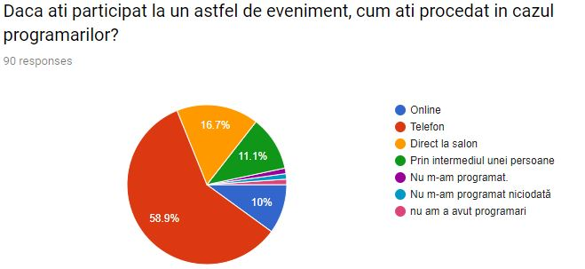
Partner questionnaire and responses
5. Insights affecting our product
We were extremely happy to discover the youngsters were so opened to our ideas, that they contributed to our research and filled the form and most of all that we actually identified a real problem that bothered so many people. It is our conclusion, after interpreting the results, that young people would enjoy a Prom Box application, with suggestions about the outfit, accessories and hairdressing.
We acknowledge that the main issue is the outfit and for the feminine part it is also very important the uniqueness of the Prom dress. Therefore we decided to create groups in our application that will help the participants of specific events diminish the number of collisions per outfit or color. If a person wants to keep her or his outfit secret, they should just upload a photo anonymously and make everyone else in the group aware that the outfit is already taken.
Moreover gathering together all the shops and vendors with party dresses and suits, in the same application should become our focus, since the main problem is the time spend in finding the outfit. The customers could shop for what they need online, place an order and not visit all the shops in town. This could save time, energy and what is even better could save you the regret. When you buy an outfit and a few days later you discover something better at a shop which you considered too far at the beginning, but you finally decide to visit, that is called regret.
Last but not least, we point out the possibility of growth that resides in the Prom Box idea, since most of our candidates indicated they would need such an application not only for Prom, but for other special events such as weddings and parties.
6. Are we ready to move to the Customer Validation stage?
After analysing the results of the research, the next logical step would be designing a prototype application, taking into consideration our old ideas, together with our new findings. We consider that could take us a bit of time, but afterwards we could share the prototype with our closest friends and ask them to test the application. This is how we imagine the first round of customer validation.
During summer the client flow is reduced because of the holidays
Services offered: haircuts, cosmetics, nails
Customers who come to the salon for special occasions
Better ways to make customers aware of special offers
Attracting a new customer base
Bucharest
Customers usually come through recommendations from other customers
Online exposure
Most appointments done on the phone
2. Online marketing
Demographics
Behaviour
Needs
Problems
Dress shop
Targeted clients: people who have an upcoming special event
Special person who deals with online marketing
Rely on the fact that Facebook and Instagram grow by themselves
Services offered: dresses for special occasions made in Romania
Customers come mostly from the internet - Facebook and Instagram
Rely on the already existing fame of the brand
Bucharest
3. Student01
Demographics
Behaviour
Needs
Problems
job: student
has three/four special events per year
short distance between dress shop and home/work
long distance between dress shop and home/work
age: 22
is a loyal customer
appointments done on the phone
address: Bucharest
not necessary a new outfit for every event
gender: male
4. Student02
Demographics
Behaviour
Needs
Problems
job: student
the attendance of the events: occasionally
appointments done on the phone
the stress of choosing the perfect outfit
age: 22
not necessary a new outfit for every event
list of reviews
time management
address: Bucharest
trust salons for manicure, hairstyle and makeup
find the perfect and unique dress
gender: female
5. Employee01
Demographics
Behaviour
Needs
Problems
job: programmer
has three/four special events per year
tailoring services for a special occasion
the final result wasn’t the expected one
age: 26
not necessary a new outfit for every event
list of reviews
time management
address: Bucharest
usually, reads reviews
long distance between dress shop and home/work
gender: female
6. Employee02
Demographics
Behaviour
Needs
Problems
job: programmer
the attendance of the events: occasionally
short distance between dress shop and home/work
tpoor transportation services
age: 23
not necessary a new outfit for every event
showcase of multiple shoes models or other products
address: Bucharest
online commands
online purchasing and delivery process
gender: male
Use Cases and New Wireframe
Partner Flow. Click to view
Partner Use Case. Click to view
Client Flow. Click to view.
Client Use Case. Click to view
Partners - Register
Partners - Signin
Partners - Appointments
Partners - Feedback
Partners - General Information
Partners - Purchases
Milestone 5
Lead generation and collection
1. Landing page update
First of all the team took care of updating and changing the last version of the landing page into something more appealing. The design was sketched again, an attractive image was added at the beginning of the page, a new main menu at the top and some slide shows were included. Apart from these new features, the team also added some animations, special funny effects to the welcoming image and some next and prev arrows to the slide shows meant to illustrate possible salons and clothing brands opportunities. Long blobs of text were summarized in order to catch the essential and to arise the users interests.
After refactoring the aspect of the landing page, we added helper tools that will support us in the next stage and reveal important metrics related to our users behaviour. We used Formspree, Hotjar and Google Analytics.
2. Bring people to the landing page
In order to bring people on our landing page we shared its link on two main channels: Facebook and WhatsUp. Taking into consideration that the main target of our product are young people that attend parties or proms, we shared the link and invited them to take a look at our landing page, by posting on targeted Facebook Groups: the Prom Group for the 2019 Generation (Faculty of Automatic Control and Computer Science), old Series Groups like CC and C1. These specific groups were intentionally targeted because they bring together lots of youngsters that already had a Prom experience, so they are already sensitive to these subject and furthermore they represent the main customer segment of the product due to their age and customs.
The promotion stage was taken a step further and we even used WhatsUp to ask personal friends and family to share the link of the landing page among their own friends circles. We believe that a personal approach could be more effective than yet another post on a Facebook Group.
3. Analyzing updates
After spreading the word and inviting people to navigate our landing page site, we took a close look at the results that were collected.
Google Analytics
Google Analytics provided us with a lot of useful metrics, that helped use realize how many visitors we had and how successful was their interaction with our website:
- there were 119 users in total, in one week (10 -17 November 2019)
- 148 sessions with the average session time of 34 seconds
- the 119 users had an average time of 33 seconds spend on the landing page, but among them there were 20 users that came back more than once (recurrent users) which scored an average of 40 seconds
- 73% of the sessions were started using a mobile device
- the rejection rate computed by Google Analytics raised up to 88%
Hotjar
Heatmap, analyze click maps
Hotjar provided a very useful insight within a heatmap that highlights the spots preferred by our users, the places on our website that were clicked the most. We recorded a big number of clicks on the next and prev arrows of the slide shows (for salons and clothing brands), some on the main menu on the top of the page and a few on our Fiki link. The menu items were clicked according to their position inside the page, the first items were clicked the most, while at the end, when the interest of the users dropped, the Features item in the menu for instance was clicked fewer times.
User recordings
After analysing the contents of the user recordings we came to the conclusion that there are three different types of users: the users that scroll chaotically and does not have enough patient to understand what the website is all about, the users the scroll a bit slower but don’t read the information, they just play with all possible animation in their way and have fun with all sorts of visiual representations and the last category, the users that read the content, also get involved with the show slides, but in the end, usually fill in the subscription form.
Feedback that we received
Two of our users were kind enough to leave us some feedback. One of them appreciated the design (“Cool Design”), and the other expressed his/hers real interest in using the application when it will be ready (“I would have liked actual links. The mobile version looks great, congrats.”).
Formspree
Counting on Google Analytics we know the number of visitors was 119 in one week, out of which 20 were recurrent visitors. With Formspree’s help we counted 8 visitors that turned into leads and were successfully converted. They filled in the subscription form, consenting they want to receive further information via email, and keep in touch with the progress of our product. In conclusion the conversion rate is 6.722.
Campaign channels comparison
After analyzing the results described above and investigating who are our subscribers we decided that the WhatsUp sharing method was more effective than posting on Facebook Groups. When we approached people at a more personal level the results were better. However, we wouldn’t say that WhatsUp is a better channel than Facebook, but we would agree that a closer and more personal approach pays off.
Milestone 6
Our clients are
Salons
Actual customers who want to prepare themselves for a festivity
The total number of targeted customers in Romania
Total customers with age between 18-24 years old
1.7 million
The number of salons in Romania
15.678
The penetration rate is calculated depending on how critical (if it is a must have
and a lot of people cannot live without it) this app
can be at the moment. This application is more for a specialized purpose so it is
going to have a low rate.
In our case we will suppose that the penetration rate = 45%.
To calculate the market value, it is necessary to calculate the market volume.
Market value = Market volume * average value
Average value of the application will be of 2.23$.
The market volume = (number of targeted customers * penetration rate)/100
Number of targeted customers = 1.7 million + 15678 = 1,715,678
Market volume = (1,715,678 * 45)/100 = 772,055
Market value = 772,055 * 2.23 = 1,72 million
Competition
PromGirl total annual revenue = 19,4 million
MGNevents total annual revenue = 9,8 million
Revenue
Industries revenue total year = Promgirl + mgnevents = 19,4 million + 9,8 million = 29,2 million
For the first half year the application will be free for everyone to see how many people would really use this app. If there is a high number of people and the application will be a success then the application will cost near as 2.23$. For the first year using only for a half year, then the tax for the app will be 2.23/2 = 1.11$.
Total year 2 revenue = Advertisements + Application
Advertisements = 7,200$
Application = 2,23 million $
Year2 = 7,200$ + 2,23 million $ = 2,24 million $
As our application willl grow and will not only be used for high school festivities preparations, but also for weddings, christenings, etc. So, the customers segments will be 18-50 years old.
So, the number of targeted customers will be as 12,238,715 million.
Total year 3 revenue = Advertisements + Application
Advertisements = 20,070$
Application = 6,02 million $
Year3 = 20,070$ + 6,02 million $ = 6,04 million $
So, it can be seen in the third year is a high growth.
Total year 4 revenue = Advertisements + Application
Advertisements = 24,084$
Application = 9,34 million $
Year4 = 24,084$ + 9,34 million $ = 9,36 million $
Total year 5 revenue = Advertisements + Application
Advertisements = 36,126$
Application = 12,21 million $
Year5 = 36,126$ + 12,21 million $ = 12,24 million $
Total revenue for 5 years = 30,740,000 $
Total average revenue for 5 years = 6,148,000 $
Market share for promgirl = 19,4 million / (9,8 million + 6,148,000) = 19,4 million / 15,948,000 = 1.21%
Market share for mgnevents = 9,8 million / (19,4 million + 6,148,000) = 9,8 million / 25,548,000 = 0.38%
Our firm:
Market share 1 year = 860,720 / 29,2 million = 0.03%
Market share 2 year = 2,24 million / 29,2 million = 0.08%
Market share 3 year = 6,04 million / 29,2 million = 0.20%
Market share 4 year = 9,36 million / 29,2 million = 0.32%
Market share 5 year = 12,24 million / 29,2 million = 0.41%
Market value 1 year = 860,000
Market value 2 year = 2,23 million
Market value 3 year = 6,02 million
Market value 4 year = 9,34 million
Market value 5 year = 12,21 million
Total market value for 5 years = 30,66 million $
Total market average value for 5 years = 6,13 million $
Total market share value for 5 years = 1.04%
Total market share average value for 5 years = 0.2%
In conclusion, as can be observed from the above calculations, our business is profitable and is in further developing.
Milestones 7+8
Rebranding for MVP
Given the feedback received both from the coordinators, as well as from potential users and partners, we considered rebranding. The main reason for this decision is represented by the target market size that may not prove sufficiently fruitful in our starting country. Since proms in Romania only take place during a few months in a year, even if we could reach a lot of the students attending their proms, this would limit our activity only to may-august.
Furthermore, although we recieved positive feedback regarding the utility of the idea of shortening the time for obtaining a prom-package, the previous solution had an insufficient potential customer number. Therefore, we decided to extend the application to apply to all kinds of events which require special preparation (outfits, makeup, accessories etc.), thus ensuring us all year round activity and a larger customer segment.
Thus, the main target became adjusting our project’s vision to reach a wider audience. In order to achieve this we focused on two directions:
1. Product extending
We decided to change the areas applied for the same type of product: extending the event range from proms so that it includes all sorts of formal and informal events that require a certain attire and preparation - such as weddings, parties, baptisms and others. Anyone who has a special event coming up and needs a memorable outfit, a salon appointment or inspiration in any form can now use our platform.
The rebranding means that our partner list will also have to extend, as we now address a much larger market, made up of people of different ages, backgrounds and preference. Thus, we have to accomodate all of their wishes and make sure that our platform offers products appropriate for all tastes and ages.
Thus, changes reflect in the type of providers and products in our database, as well as the description and data for previous validation items. (Which have been modified accordingly and marked with an )
2. Redesigning the concept
The graphics and color scheme of the previous concept had to be shifted to a more mature and universal design, to reach customers from various age groups. Maintaining simplicity while also communicating an inspiring message was important, therefore we chose a universally flattering color scheme for a retail-style web application. Ensuring accessibility was also a primary concern, so we verified the color block to be readable and not eye-straining.
We turned to simplicity for the CSS layout, while suggesting sophistication using geometric cuts for the components, instead of the irregularly shaped design for the previous PromBox version, which was targeting a younger audience with its playful style.
We ensured accessibility is achieved through text readability and contrast.
3. Reevaluation of the market research
The rebranding of the product has caused the reevalution of total market value and total market share. Following the consequences, other competitors have appeared on the market and the number of clients have also grown.
As our product has extended on the market, our customers have grown in numbers. So, the total number of customers have the age between 18-60 years old.
15,72 million
The penetration rate will remain the same, 45%.
Average value of the application will grow with 25%. So, the final value will be 2.78$.
Number of targeted customers = 15,72 million + 15,678 = 15,735,678
Market volume = (15,735,678 * 45)/100 = 7,081,055
Market value = 7,081,055 * 2.78 = 19,685,333
As the product became larger on the market, the competition also has grown. Another competitor has appeared, Faviana.
Faviana total annual revenue = 15,8 million.
Industries revenue total year = Promgirl + mgnevents + faviana = 19,4 million + 15,8 million + 9,8 million = 45 million.
For the first half of the year the application will be free for everyone to observe how many people would really use this app. If there will be registered a high amount of people and the application will be a success then the application will cost 2.78$. For the first year using the cost only for a half the year, the tax for the app will be of 1.39$.
Total year 2 revenue = Advertisements + Application
Advertisements = 7,200$
Application = 11,62 million $
Year2 = 7,200$ + 11,62 million $ = 11,627,200$
Total year 3 revenue = Advertisements + Application
Advertisements = 20,070$
Application = 13,23 million $
Year3 = 20,070$ + 13,23 million $ = 13,25 million $
Total year 4 revenue = Advertisements + Application
Advertisements = 24,084$
Application = 15,82 million $
Year4 = 24,084$ + 15,82 million $ = 15,84 million $
Total year 5 revenue = Advertisements + Application
Advertisements = 36,126$
Application = 19,68 million $
Year5 = 36,126$ + 19,68 million $ = 19,71 million $
Total revenue for 5 years = 70,27 million $
Total average revenue for 5 years = 14,05 million $
Market share for promgirl = 19,4 million / (9,8 million + 14,05 million + 15,8 million) = 19,4 million / 39,65 million = 0.48%
Market share for mgnevents = 9,8 million / (19,4 million + 14,05 million + 15,8 million) = 9,8 million / 49,25 million = 0.19%
Market share for Faviana = 15,8 million / (9,8 million + 14,05 million + 19,4 million) = 19,4 million / 43,25 million = 0.44%
Our firm:
Market share 1 year = 9,843,386 / 45 million = 0.21%
Market share 2 year = 11,627,200 / 45 million = 0.25%
Market share 3 year = 13,25 million / 45 million = 0.29%
Market share 4 year = 15,84 million / 45 million = 0.35%
Market share 5 year = 19,71 million / 45 million = 0.43%
Market value 1 year = 9,842,666$
Market value 2 year = 11,62 million $
Market value 3 year = 13,23 million $
Market value 4 year = 15,82 million $
Market value 5 year = 19,68 million $
Total market value for 5 years = 70,19 million $
Total market average value for 5 years = 14,03 million $
Total market share value for 5 years = 1.53%
Total market share average value for 5 years = 0.3%
In conclusion, as our product has grown more, our business has become more profitable. So, it is worth launching the product on the market.
Partners
For this stage of the project development, we managed to confirm the implication of certain real partners that can provide services such as clothing, salon, hairstyling and make-up. We have contacted them and obtained confirmation for their disposition to be available for the MVP:
We made sure to take into consideration the feedback we received during the validation processes. Considering the suggestions made by the people who were asked to test our application, we decided to design the MVP with the above-mentioned feedback in mind, as well as redesign the Landing Page accordingly. Thus, we made changes as follows:
Less text
Judging by the Google Analytics results and considering the small amount people spent on the parts of the landing page that had "wall of text" sort of display, we decided to shorten the paragraph descriptions:
More interactivity
Some of the reviews we received using Hotjar imply people demanding more interactivity implying links, therefore we made the said interactive cards actually redirect the visitor to its respective brand product page.
Trustworthy brands
We included the partners that we discussed with in the Services section, since most of our interviewees put accent on the reputation aspect of a good salon.
Landing page evolution
Initial version
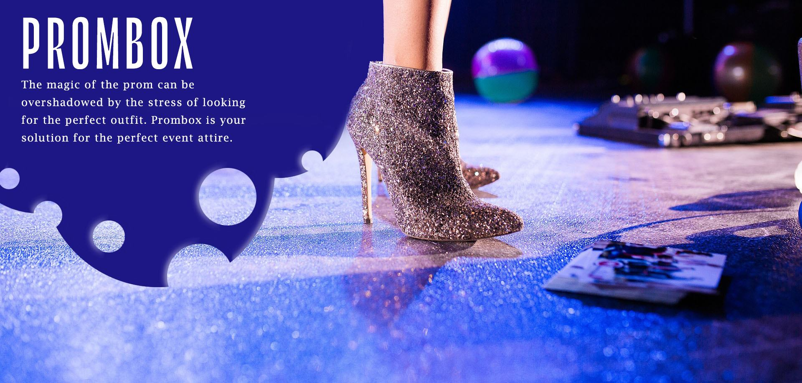
Second version
After Rebranding
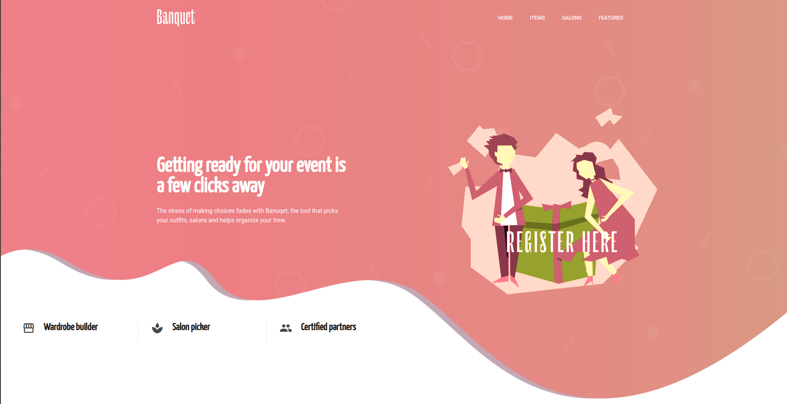
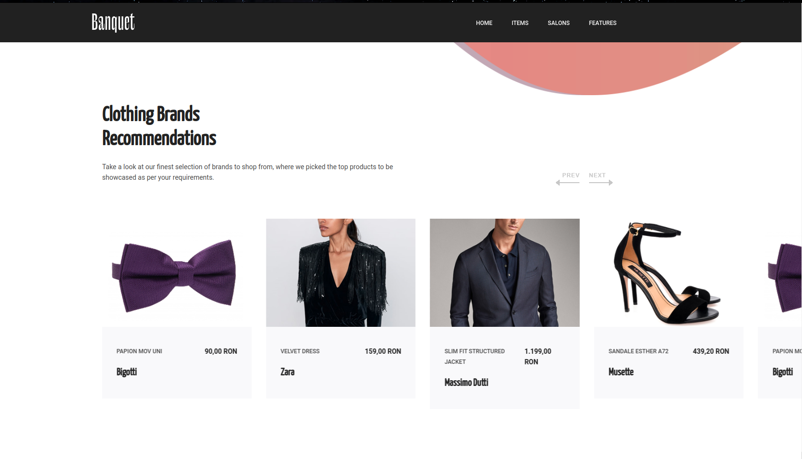
Evolution history
What problems we identified when preparing for prom (these problems extend to the participation to all kinds of special events):
1. picking the perfect outfit and accessories
2. Salon appointments
These thing take up time and are very stressful. On top of this, the psychologial pressure of having to look good and the social anxiety that comes from the interactions with other are a big problem for a lot of young people today.
Our solition was an application which offers the following features:
1. Showcase of multiple dress models
2. Partnerships with dresses providers and possibility of purchasing the desired product through the app (+delivery)
3. Showcase of multiple hairstyles
4. Showcase of multiple shoes models
5. A list of salons for manicure and hairstyle appointments
6. A list of transportation suggestions
7. The possibility of creating a group of friends to make sure there will not be two people with the same outfit
8. The possibility of providing a time frame and a list of favorites salons and getting all your appointments done automatically
9. Facilitates renting a limousine
10. Modern fashion suggestions
11. A simulator to see how the dress and the shoes would look together in different colors
Validation Steps
Questionnaire (what we learned, how it helped us and how we remodeled the product)
1. The biggest issue is finding the perfect dress/suit. On second place came the shoes and the third place was occupied by making the salon appointments. These will be the focus points of our platform and the area where we will offer the most suggestions
2. A lot of people make salon appointments for special events and almost all are willing to do so online, but could not because the salon did not offer such features. This lead us to want to automate this process for all salons which want to partner with us.
3. Transportation is not an issue for anyone, we need not include this in our platform
4. The majority of people communicated with friends and other event participants using WhatsApp and Facebook, often creating groups which become useless after the event is over. Our platform will thus offer groups dedicated to each event, which will be automatically deleted once the event has passed
5. The majority of people faced this issues not only for prom, but also for other events (weddings, parties etc.). This lead us to the ideea of rebranding and addressing all kinds of events which require special preparation, not just proms
Interviews (what we learned and how we improved the concept of our application)
1. Some people have their outfits custom made -> we could include tailor as well on our platform
2. Some people reuse previously worn outfits, but buy new shoes and accessories -> validation for the ideea of including accessories on the platform
3. A very important aspect, especially amongst girls, when picking a salon was that they want quality reviews -> we will include reviews as part of our platform for users to fill after goingto a certain salon
4. Some people are willing to buy outfits online, but most want to try the clothes on first -> the platform should include pictures and suggestions, as well as links for purchase
5. Search time can be reduced if one knows exactly at what store one can find a specific item from our showcase -> product availability should also be shown to users
Analytic Tools
1. People check out the link 2 days after a share (Google Analytics) -> product promotion should be done in different groups and a few days apart for each group (not all at once)
2. Hotjar + Heat Map -> interactive landing page + real links, not mocks
3. Comparison between promotion channels -> a personal approach pays of better => our first wave of promoting the product should be done massively among close people.
MVP Features
1. Showcase of dresses, suits, hairstyles, makeup and accessories (shoes, jewels etc)
2. List of salons and their prices,reviews and online appointments
What ideas we cut out in the process
1. Transportation + limousines
2. The ideea that everything needs to be purchased from the application: online purchasing is now entirely the user's option
Features we will add in the future
1. Groups for event participants
2. Market place for users (the possibility to sell items which were worn just once)
3. A solution to check the uniqueness of an outfit for an event
4. Outfit simulator
5. Keyword search
6. Outfit suggestions according to the occasion/event
7. Partnerships with more stores in Bucharest to find item availability
8. Calendar to remind users of their appointments and upcoming events
Milestone 7
MVP
Validation before the MVP
Questionnaire
1. People feel like they are wasting too much time finding the perfect outfit -> this caused us to gather in the MVP a few clothing cathegories, neatly organized, so that the user can easily find what he/she is looking for and exclude categories he/she is not interested in from te start. An example of such categories are: short/long dresses for women and suits and shirts for men.
2. Some people wear the clothes they purchased for previous events, but use different accessories -> the MVP contains a separate category for accessories. This category is also organized in sub-categories (shoes and accessories for men and women)
3. Respondends have shown interest in making online appointments for salons - we partnered with 2 salons from Bucharest and offer the users the possiblity to make an appointment directly from our platform, without having to directly call the salon and negociate an open slot. We also show salon reviews, also based on the opinions of the respondents
4. Since no respondent expressed his/her wish for the platform to include transportation solutions this feature was not included in the MVP
Interviews
1. Some respondents expressed their wish to have a custom-made outfit -> we have included a category for tailors (with reviews) in the MVP
2. Everyone wanted outfit suggestions, but some respondents wanted to go to the store to try the clothes on, while others were open to purchasing the items directly online -> the MVP offers suggestion and images, but also contains link to the items from their respective vendors for online purchase (where available)
The MVP is based on the the main meniu, from which the user can choose the category he/she wants to view and easily navigate from category to category
The Home page describes the problem solved by our platform and contains a short description on how to use the platform
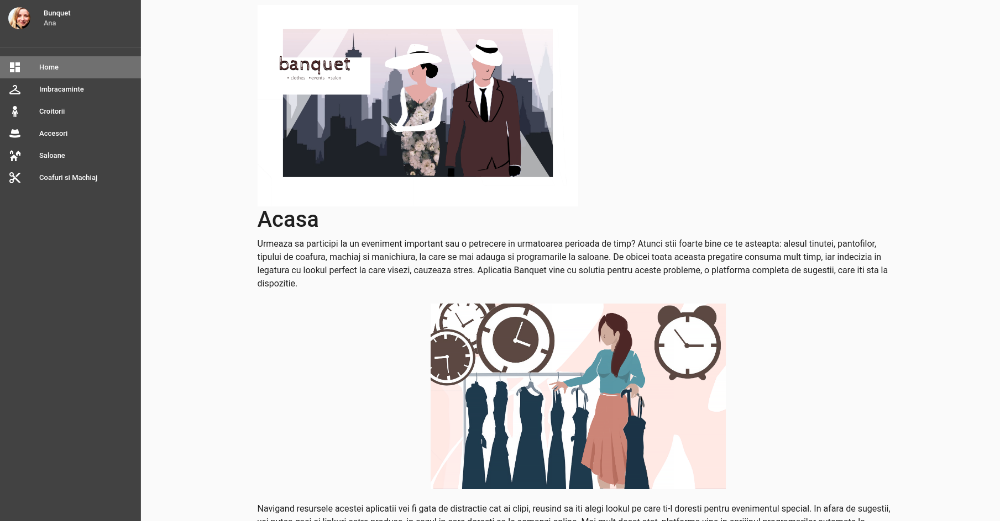
The Clothes page contains clothes suggestions for men and women grouped in categories
Suits
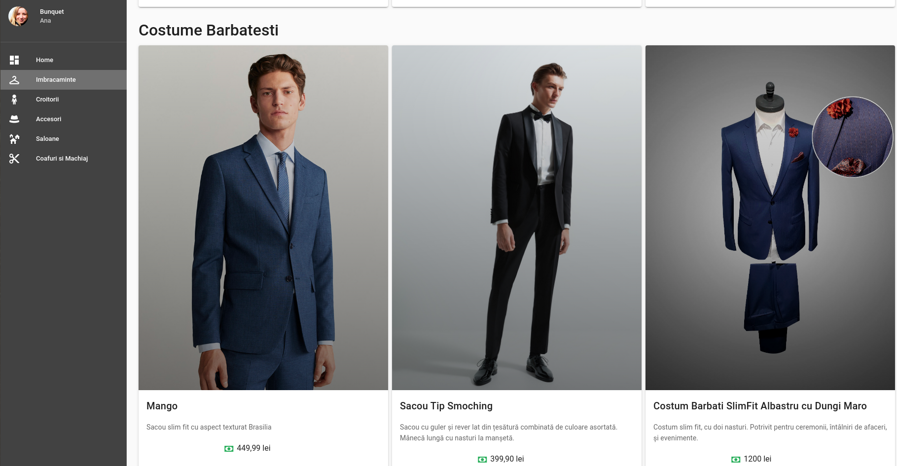
Shirts
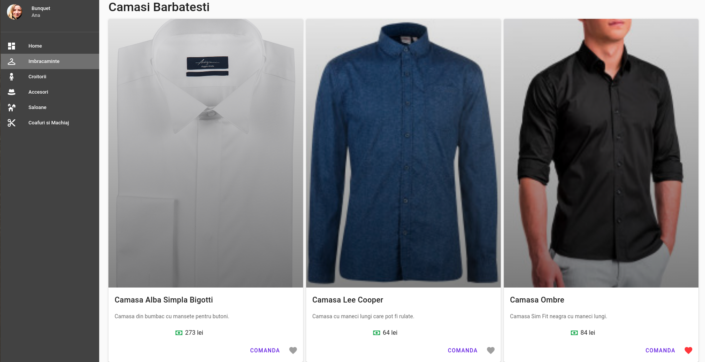
Short dresses
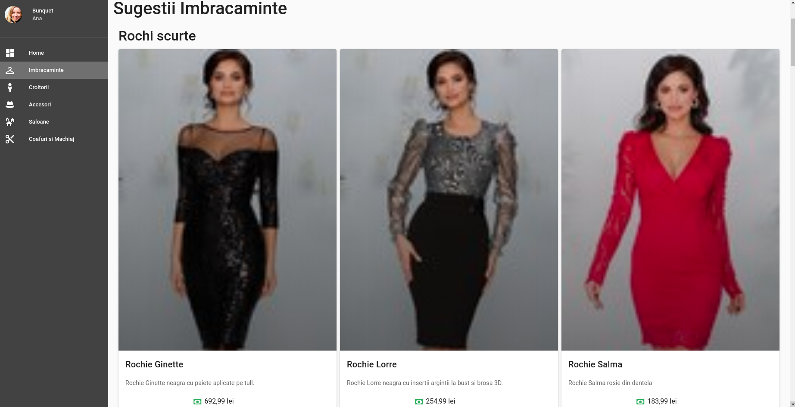
Long dresses
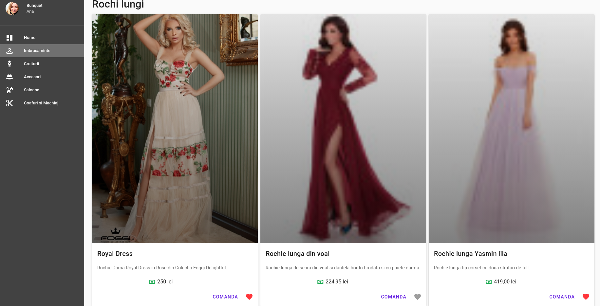
The Tailors page contains suggestions and reviews for different tailors
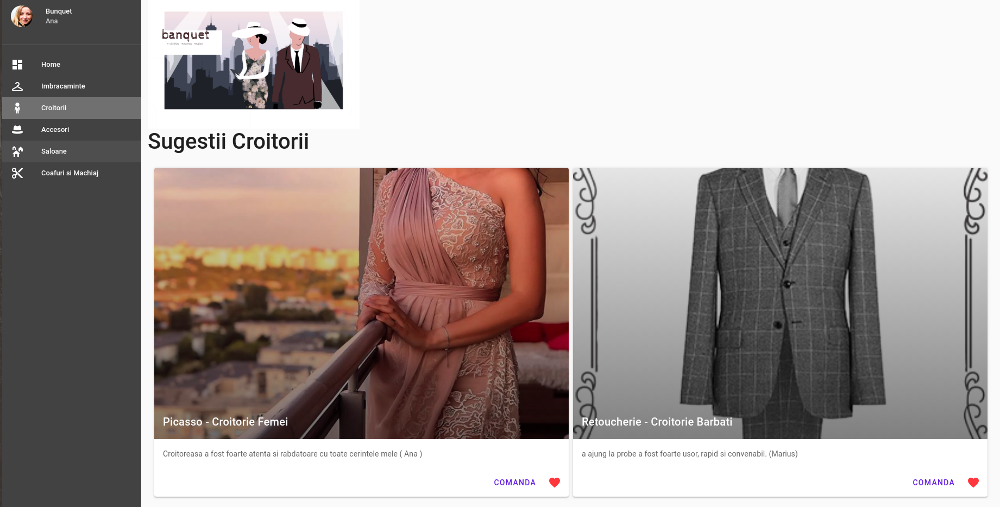
The Accessories page contains suggestions for shoes and accessories to help create the perfect full outfit
Shoes and Accessories for women
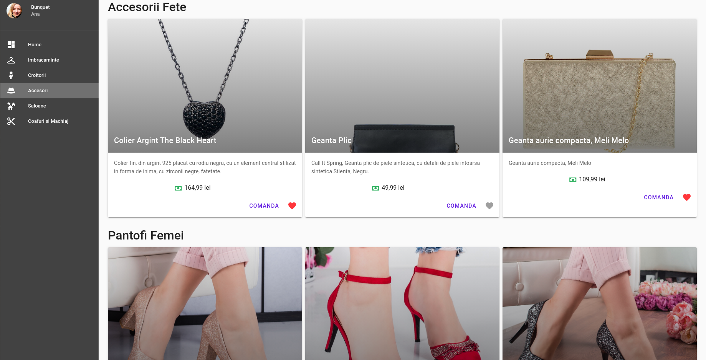
Shoes and Accessories for men
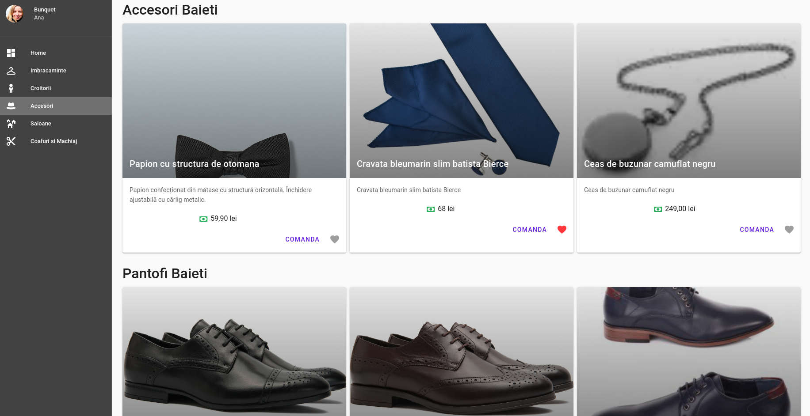
The Salons page contains salon suggestions and reviews
Shoes and Accessories for women
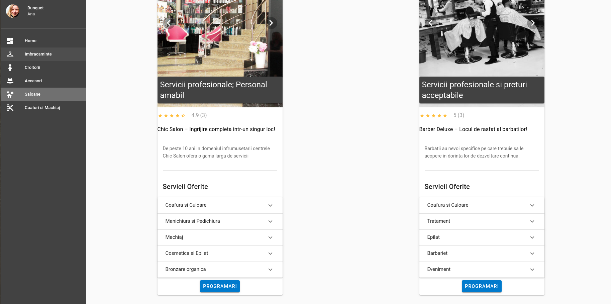
We also offer the user the posiblity to make an appointment directly from the platform. The users can see which days and hours are still available and choose an interval to his/her liking, without having to call the salon
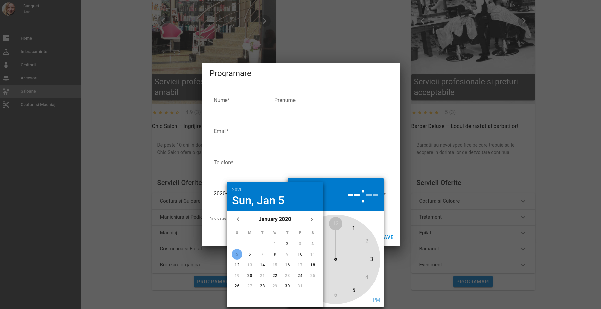
The Hair and Makeup page contains suggestions and ideeas for different hairstyles and makeups
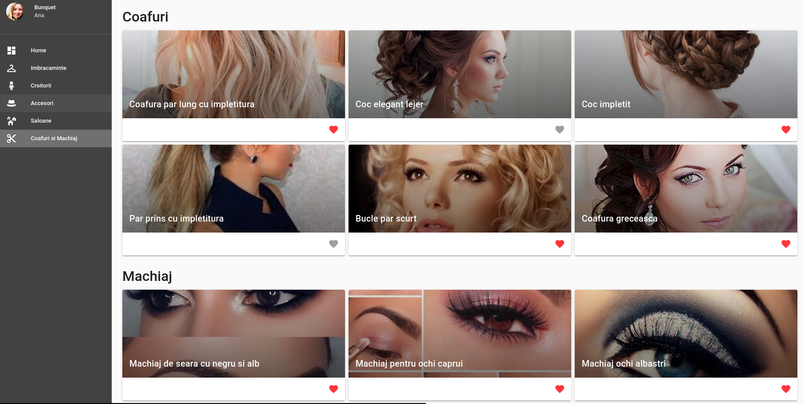
After all the above arguments, we hope we managed to prove that our MVP was build around the main idea of solving the users problem that was discovered initially and most of all, that we took into consideration all the previous validation stages.
First of all we encountered the fact that getting ready for a special event or party is time consuming and there are different issues that have to be handled at once, like outfit, make-up, hairstyle and shoes. We discovered users would like different outfit possibilities to be gathered together and ease their struggle of finding the right model instead of wandering from shop to shop all day long. According to these findings, we solved their problems by assembling a platform that contains all the necessary models and categories in only one place: dresses, suits, shoes, handbags, fashionable make-up suggestions etc. Therefore, we argue that our MVP will have enough value for arousing peoples interest and attention, make them use it and in the end, after some feedback and modifications loops, even buy it.
Moreover the MVP is just a mock in terms of how many different dresses, shoes and models in general could be contained in the same platform; so we also argue that this MVP is good enough to prove future benefits and retain some early adopters.
Second of all, in the above paragraphs you could find specific explanations about how this MVP took into consideration real users opinion. We included tailoring shops, hairstyle and make-up suggestions, we automated the process of getting a salon appointment and we also included all types of accessories as well as real links for online shopping. Our MVP already provides minimalistic version of the full package for getting the perfect look without stressing out.
On the other hand, we are aware that this is just our opinion, and we need to validate all our work with someone from the outside; and this is going to be handled during our first sale milestone. We will ask someone who hasn’t heard about our app before to use it and afterwards we will collect the necessary feedback to improve our MVP.
Milestone 8
First Sale
The purpose of this milestone is to validate our concept of MVP with real users, to receive their feedback and use it for our first loop of improvement. We are going to use the first sale stage to make sure that our business idea is on the right track and our vision of transposing the desired solution into an application is the right one.
We asked a friend, who had no idea about the application before, to navigate through the platform’s menu, try and use the app and give us her insights. Here is a link to the entire conversation. Her feedback could be grouped into the next categories:
improve the aspect of the app
-> not all the pictures are clear
-> more details about the products should be included (length of the dress for instance)
-> when you click on Place Order a new tab should be opened
-> the price should have a standard format all over the place
ideas for new features
-> search feature for outfits and accessories
-> sorting according to the price feature
-> make a wish list connected to a profile in which the user can save all his items
-> send notifications if there are any discounts
-> count the number of likes per product, to know how other users appreciated it
-> add bracelets, earrings and hair accessories to the accessories section
-> for the make-up categories add useful videos instead of picture suggestions
-> add the address of the salons in the details list of the Salons page
-> make a calendar tight to the user profile that shows what appointments have been made and provides the opportunity to modify them
good feedback, keep doing it:
-> the products are displayed in the right way, the pictures are large enough and the number of products per row is ideal
-> the tailoring section is a must keep. Even though you don’t place an order for your personalised outfit you may need some adjustments to the product you bought from the shop.
-> there are multiples dresses options gathered from different sources which is very nice.
-> the way salon appointments work is good since it is fast and automatic and does not need any further negotiation, you can just pick the right time for you from an availability list.
Taking into consideration all this useful feedback, we consider that our product is on the right track, the business idea is a valid one and solves a real problem. Moreover the skeleton of our MVP is good and contains all the needed categories, structured in a clear and useful way. We will improve some legibility issues and improve the existing features before another testing loop.